Offizielles Programm: Kathedrale von Etschmiadzin (Sitz des Katholikos, gegründet 301/303 n. Chr.), Stadtrundgang Jerewan, Genozid-Memorial Zizernakaberd. Abends freie Zeit.
Kathedrale von Etschmiadzin: Der Legende nach zeigte Christus dem Gregor dem Erleuchter in einer Vision die Stelle, an der die erste Kirche entstehen sollte – daher der Name „Etschmiadzin“, „der Eingeborene stieg herab“. Baubeginn 301, Weihe 303 über den Fundamenten eines heidnischen Feuertempels, damit die älteste von einem Staat errichtete Kirche der Christenheit. Sitz des Katholikos aller Armenier, seit 2000 UNESCO-Weltkulturerbe.

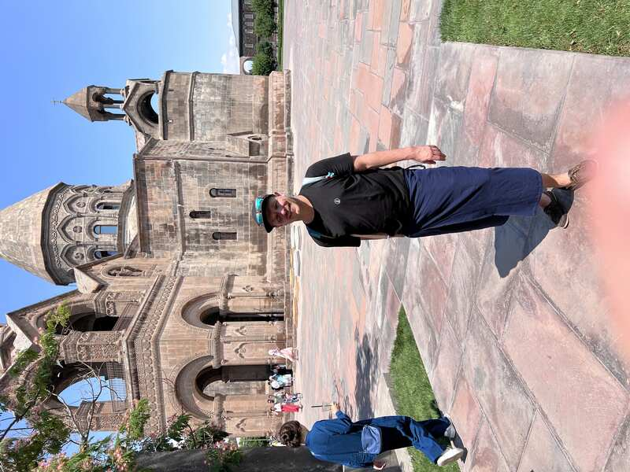
Kleidervorschrift: kurze Hosen nicht erlaubt, Wickeltücher gibt's am Eingang.
Schatzkammer: Im Manukjan-Museum auf dem Klostergelände liegen die bedeutendsten Reliquien der armenisch-apostolischen Kirche: die Spitze der Heiligen Lanze, ein Splitter vom Wahren Kreuz, ein Fragment der Arche Noah sowie der rechte Arm Gregors des Erleuchters.
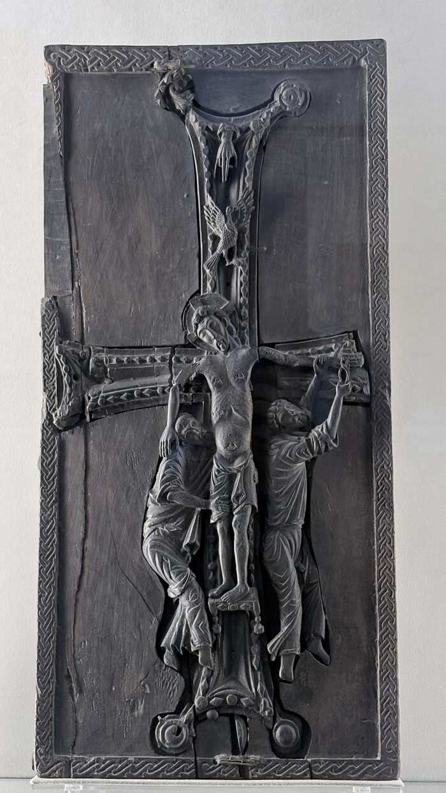

Klerus vor Ort: Diakon in liturgischem Gewand (rot-goldener Umhang über schwarzer Kutte, Vardapet-Kreuz in der Hand) und ein Mönch mit der typischen spitzen Kapuze (Veghar) der armenisch-apostolischen Geistlichkeit.
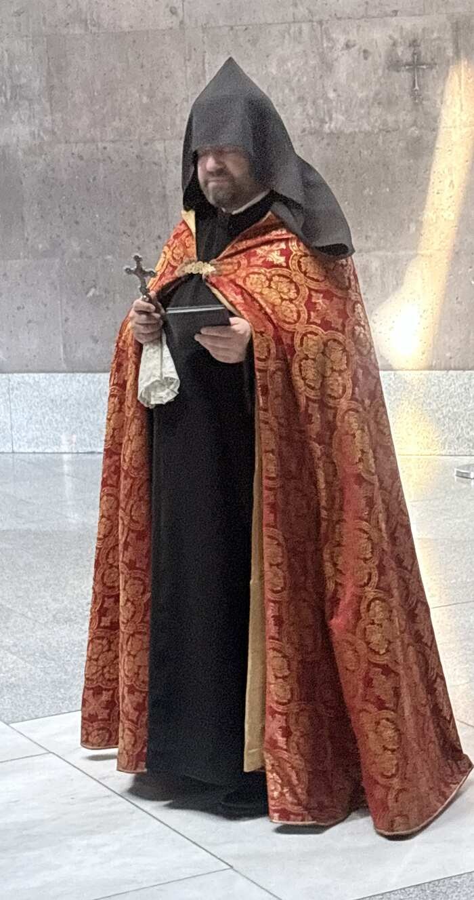
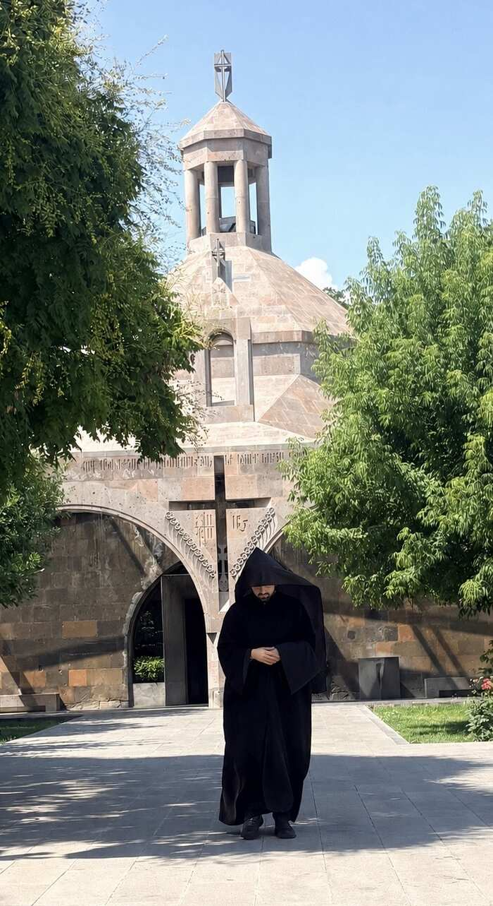
Auf dem Weg durch die Stadt: Denkmal, mit armenischen Fahnen geschmückt, an einer Kreuzung passiert. Handelsstraße mit sanierter Tuffstein-Fassade aus der Zarenzeit, im Erdgeschoss moderne Ladenzeilen – typisches Jerewaner Nebeneinander von historischer Hülle und heutigem Einzelhandel.
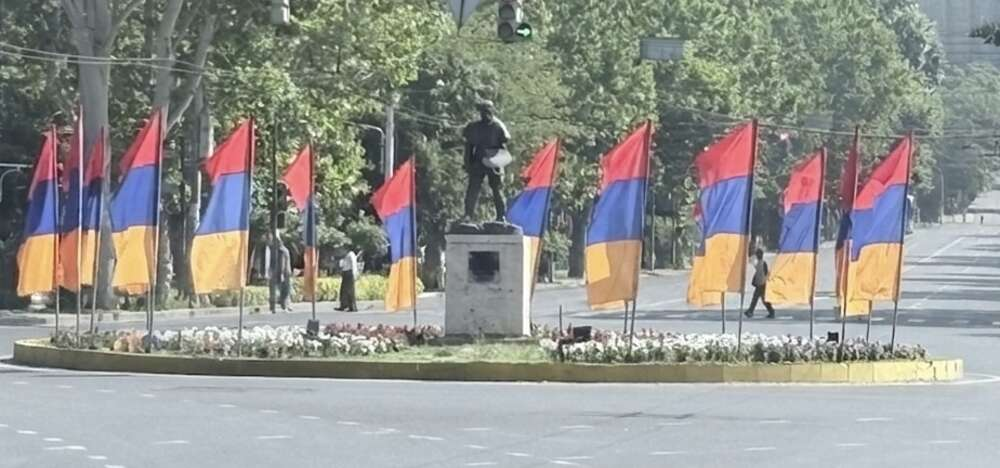

Kaskade & Cafesjian-Skulpturengarten: 572 Stufen, 118 m hoch, aus hellem Travertin. Geht auf Alexander Tamanjans Masterplan der 1920er zurück, Baubeginn erst 1971, nach dem Erdbeben 1988 und dem Ende der Sowjetunion blieb die Anlage jahrzehntelang unfertig. Der armenisch-amerikanische Sammler Gerard Cafesjian finanzierte 2002–2009 mit 128 Mio. US-Dollar die Fertigstellung samt Museum für zeitgenössische Kunst.
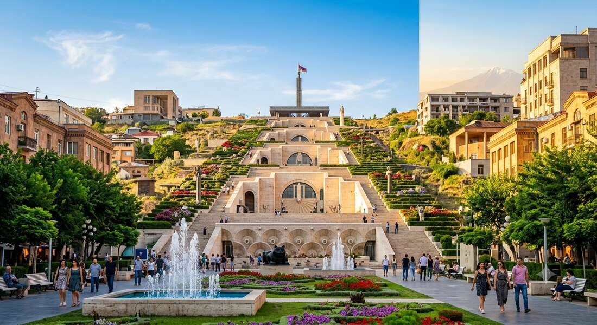
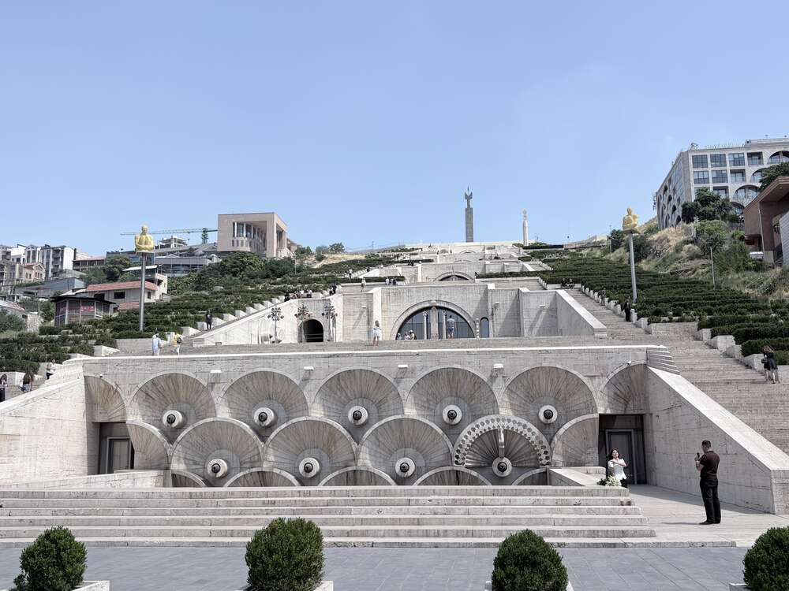

Kreisornamente zitieren armenische Teppichmuster – dasselbe Motiv wie am Platz der Republik (Tag 1).
Tamanjan-Denkmal: Am Fuß der Kaskade steht die 1974 von Artaschess Howsepjan geschaffene Statue des Stadtplaners Alexander Tamanjan, der sich über eine Steinplatte beugt – sie ruht auf zwei ungleichen Steinen für alte und neue armenische Architektur.

Skulpturengarten: Der Cafesjian-Skulpturenpark zeigt Werke internationaler Bildhauer (Botero, Chadwick, Plensa, Flanagan) – am auffälligsten zwei übergroße Bronzen von Fernando Botero: eine liegende Frau und ein „Römischer Krieger“.


Mutter Armenien (Siegespark): 1950 zunächst als Stalin-Monument eingeweiht, die Stalin-Statue 1962 abgebaut, seit 1967 steht hier die heutige Mutter-Armenien-Figur (Bildhauer Ara Harutjunjan). Kupferstatue, 22 m hoch, auf einem 32 m Sockel, der als fünfstöckiges Militärmuseum genutzt wird – gewidmet den rund 650.000 armenischen Soldaten des Zweiten Weltkriegs sowie den Gefallenen des Karabach-Konflikts. Das Sockelinnere ist der Sarkis-Kathedrale in Etschmiadzin nachempfunden.
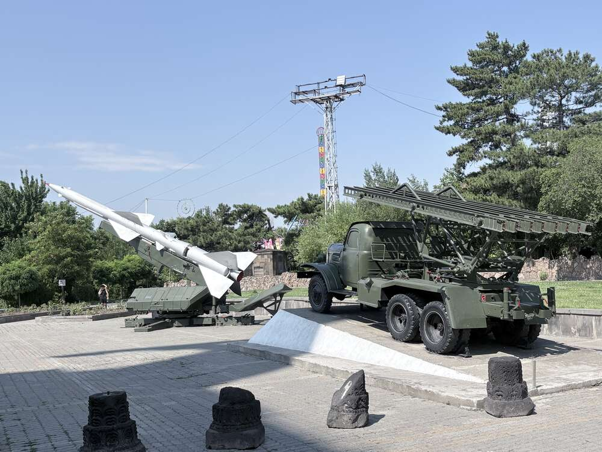
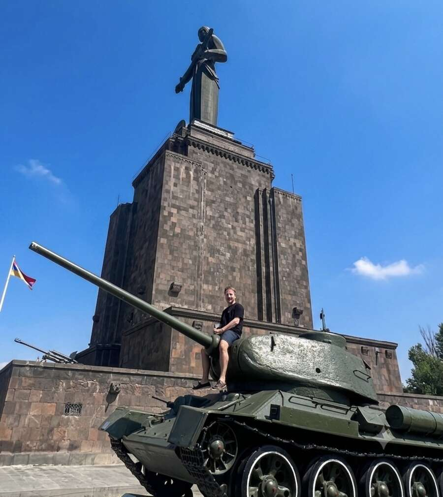


Freiluft-Ausstellung: sowjetische Fla-Rakete und Raketenwerfer auf armenischen Grabsteinsockeln. T-34-Panzer frei zugänglich. Ewige Flamme am Grab des unbekannten Soldaten.
Genozid-Memorial Zizernakaberd: 1967 auf dem Zizernakaberd-Hügel („Schwalbenfestung“) errichtet, seit 1995 mit angeschlossenem Museum. Zwölf nach innen geneigte Basaltstelen bilden einen Kreis um die ewige Flamme in 1,5 m Tiefe – sie stehen für die zwölf verlorenen Provinzen West-Armeniens im heutigen Türkei-Gebiet. Daneben eine 44 m hohe, durch einen schmalen Spalt zweigeteilte Stele: die größere Hälfte steht für die Republik Armenien, die kleinere für die verlorenen Westgebiete.

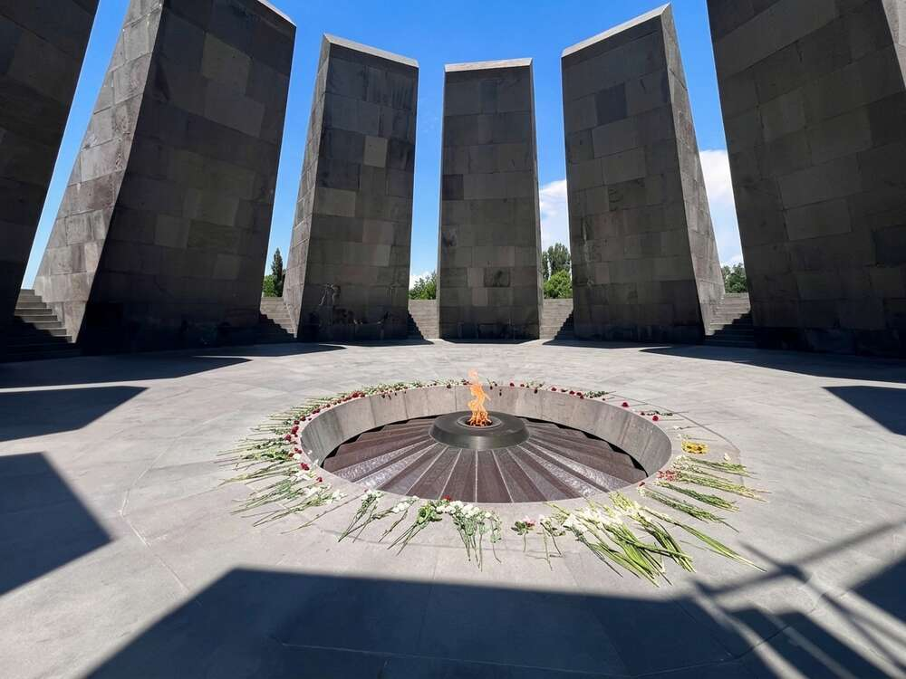
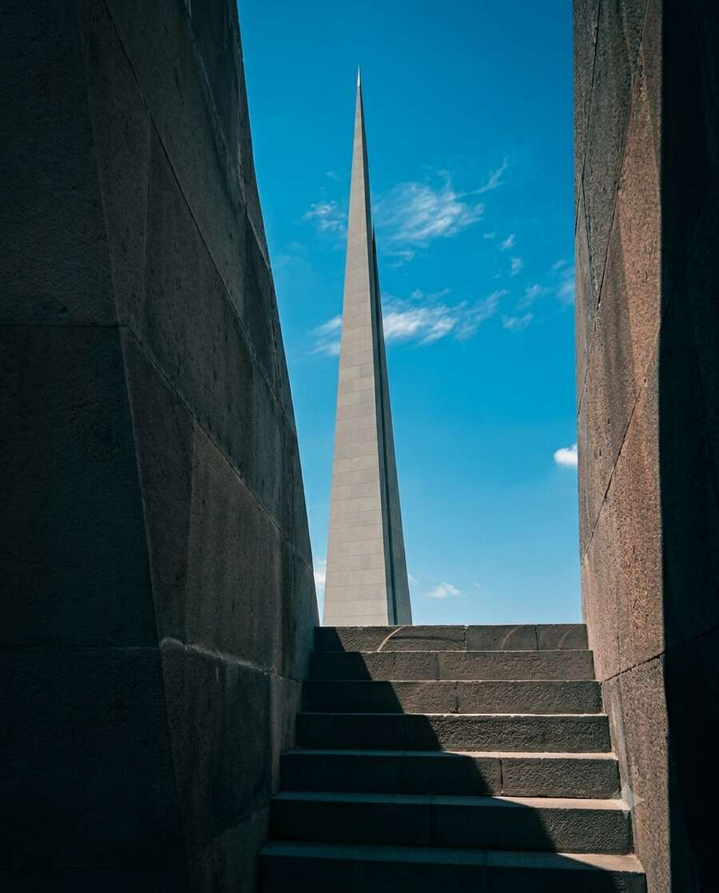

Blick auf den zweigipfligen Ararat. Ewige Flamme, täglich neu mit Blumen umringt.
Lawasch & Chorowaz: Lawasch wird direkt im Tonir-Lehmofen gebacken – der Teig wird an die glühend heiße Innenwand geklatscht. Danach ein klassischer Grillteller: Lula-Kebab, gegrillter Fisch, Auberginen und Paprika direkt auf der Glut geschmort – typisch armenisches „Chorowaz“.
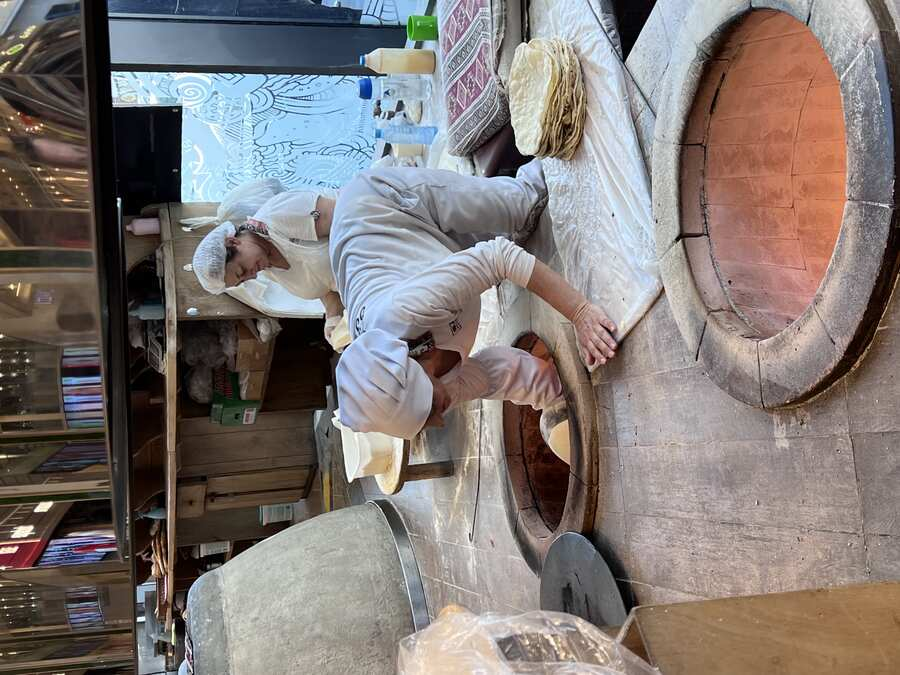
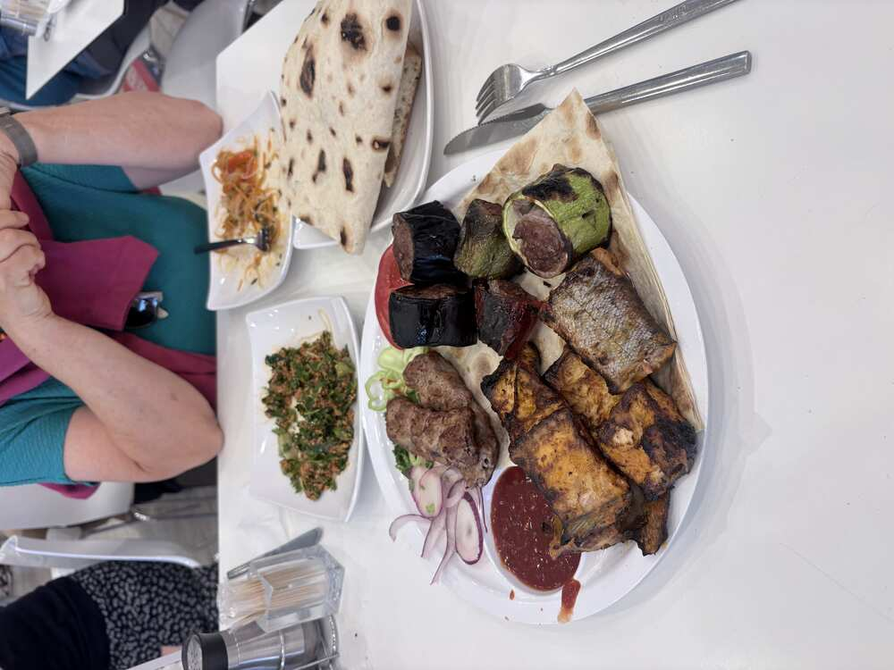
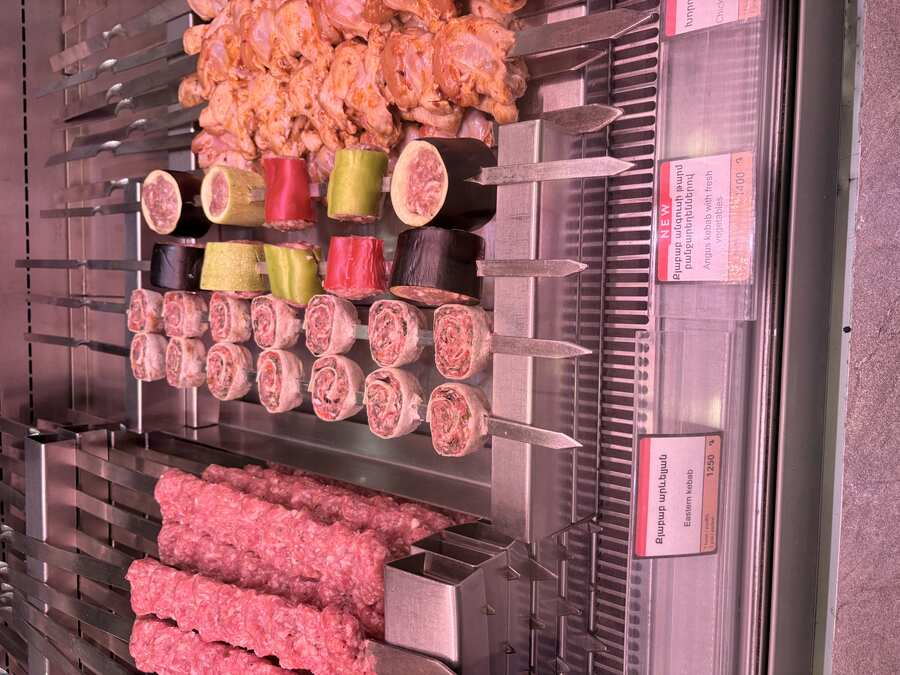
Fleischtheke mit vorbereiteten Spießen zum Selbstgrillen – in Jerewans Fleischereien Standard, nicht nur im Restaurant.